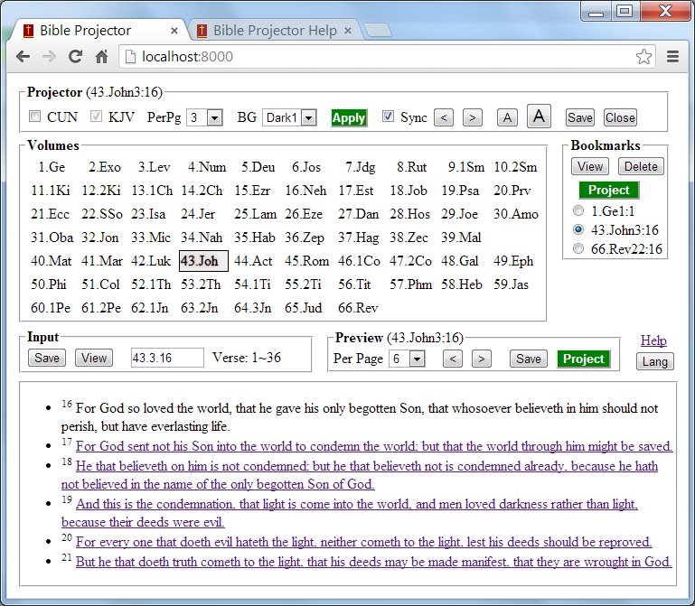

Bible Projector provides ways to select bible verses quickly and project the selected verses.
There are two browser windows, the main window allows user to select and bookmark verses. the projector window is to be displayed in the external monitor so it can be projected. Control the font size, paging, background, version of projected contents from the main window. Refer Screen Details. Please read the following section Typical Workflow, it will help you understand how to use this tool.
The main window is divided into left and right areas: In left area, Language control and Help link at top, below that is Bookmarks. In right area, Projector Control at top, in the second row, there is Volumes, in the third row, Input Control, Preview Control; and Preview area is at the bottom.
Lang and HelpClicking the Lang button will switch to language selection page. It will set KJV as the default version for English, CUN for Chinese. Clicking the Help link will open this help page. |
ProjectorThe first two checkboxes allow user to select what version of the bible to projected. CUN stands for Chinese Union Version, KJV stands for King James Version. You can select how many verses to display in Project window, the BG dropdown allows user select the background of projector window. Clicking the Apply button to apply these settings. Check the Sync if you want the content in Preview area to be synchronized. Clicking the two arrow buttons < and > goes to preview page or next page. Clicking the two buttons labeled by letter A descrease or increase the font size of projector window. Clicking the Book It button will save the current verse as bookmark, Close button closes the projector window. |
|
BookmarksYou can save verses as bookmark. Clicking the View button to preview the verse, Project button to display the verse in the projector window. InputYou enter volume, chapter and verse numbers in Input field, seperated by dot. The range of the currently entering number will be displayed next to the field and the input value will be validated; If it is invalid, the background of the input field will be changed to red. If they are valid, entering return key will preview the verse; Clicking Book It button to save as a bookmark, View button to preview. |
 |
VolumesClicking a Volume will set the volume number in the Input field. Preview controlYou select how many verses to display in Preview area, go to preview page or next page. Click the Book It button will save the current verse as bookmark, Project button display the verse in the projector window. |
Preview areaVerses are displayed in this area as hyperlinks except the first one, clicking the links will make the clicked verse to be displayed as the first one. |